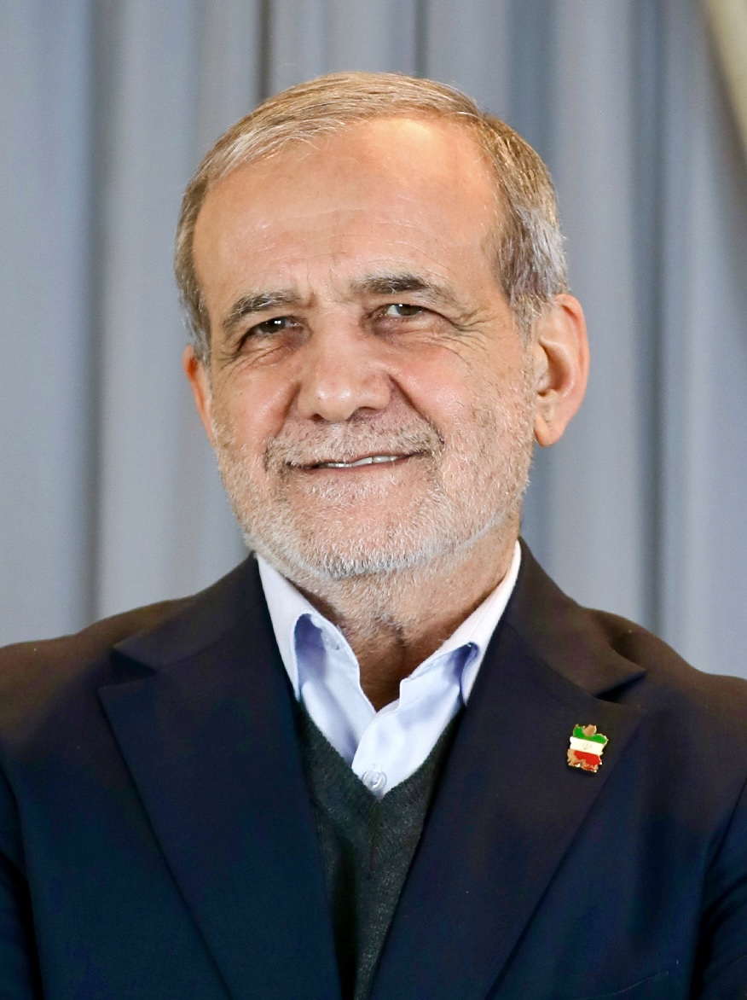

Eron urushi sentabrda qayta alangalandi: AQSh zarbalari, Quvayt va BAAdagi bazalarga hujum
1-sentabr kuni AQSh Eron hududiga yangi zarbalar berdi; Hurmuzgondagi Sirikda nikoh marosimida to‘rt kishi halok bo‘ldi. 3-sentabr kuni Eron armiyasi Quvayt va BAAdagi harbiy bazalarga hujum uyushtirdi. ShHT sammiti zarbalarni qoraladi.

2026-yil 1-sentabr kuni AQSh Eron hududiga yangi havo zarbalarini berdi. Al Jazeera ma’lumotiga ko‘ra, Eronning janubidagi Hurmuzgon viloyatiga qarashli Sirik shahri yaqinida nikoh marosimiga uyushtirilgan zarbada to‘rt kishi halok bo‘ldi. Bu — bir oy ichidagi birinchi yirik to‘qnashuv bo‘ldi.
Eronning javobi
3-sentabr kuni Eron muntazam armiyasi (Artesh) Fors ko‘rfazidagi ikki harbiy bazaga hujum uyushtirdi: Quvaytdagi Ahmad al-Jabir aviabazasi va Birlashgan Arab Amirliklaridagi al-Minhod aviabazasi.
Eron tomoni Quvaytdagi bazada sun’iy yo‘ldosh aloqasi tizimlari, uskunalar omborlari va qiruvchi samolyot angarlari nishonga olinganini, BAAdagi bazada esa harbiylar joylashgan nuqtalar va radar tizimlari urilganini bildirdi. AQSh rasmiylari bazalarga ta’sir yetmaganini aytdi.
Critical Threats loyihasi tahlilida bu hujum odatiy “zarbaga zarba” tartibidan farq qilgani qayd etildi: hujum to‘rt kunlik tanaffusdan keyin amalga oshirilgan.
Raqamlarda
- 1-sentabr: AQSh zarbalari, Sirikda nikoh marosimida 4 kishi halok
- 3-sentabr: Eron armiyasining Quvayt va BAAdagi bazalarga hujumi
- Nishonlar: Ahmad al-Jabir (Quvayt), al-Minhod (BAA)
- Urush boshlangan sana: 28-fevral 2026
- Dastlabki 12 soatdagi zarbalar: ~900 ta
- Halok bo‘lgan oliy rahbar: Ali Xomanaiy (28-fevral 2026)
Livandagi vaziyat
3-sentabr kuni Isroil mudofaa armiyasi Livanning Nabatiya tumanidagi Ali at-Tahir tepaligi ostidagi yirik yer osti inshootini bir necha oylik qamaldan keyin nazorat ostiga olganini e’lon qildi.
Ali at-Tahir Litani daryosi va Hula vodiysi ustidan nazorat imkonini beruvchi strategik balandlik hisoblanadi.
Urush qanday boshlangan edi
Hozirgi to‘qnashuv 2026-yil 28-fevral kuni boshlangan. O‘sha kuni AQSh va Isroil kuchlari Eronning raketa quvvatlari, havo mudofaasi, harbiy infratuzilmasi va rahbariyatiga qarshi keng ko‘lamli hujum boshladi; dastlabki 12 soat ichida taxminan 900 ta zarba berilgani qayd etilgan.
O‘sha kuni Eronning oliy rahbari Ali Xomanaiy halok bo‘ldi. Isroil rasmiysi uning jasadi aniqlanganini aytdi; AQSh Prezidenti Donald Tramp 28-fevral kuni Xomanaiyning halok bo‘lganini tasdiqladi.
Eron Prezidenti Ma’sud Pezeshkiyon o‘shanda mamlakat qasos olishni “qonuniy huquqi va burchi” deb bilishini bildirgan edi. Shundan keyin Eron mintaqadagi AQSh elchixonalari, harbiy obyektlari va neft infratuzilmasiga qarshi raketa va dron zarbalarini boshladi.
ShHT pozitsiyasi
1-sentabr kuni Bishkekda qabul qilingan Shanxay hamkorlik tashkilotining deklaratsiyasida Eron hududiga uyushtirilgan harbiy zarbalar qoralandi. Hujjat Xitoy, Rossiya, Hindiston, Pokiston va Markaziy Osiyo davlatlari rahbarlari tomonidan imzolandi.
Eron Islom Respublikasi hududiga ko‘plab tinch aholi qurbon bo‘lishiga olib kelgan harbiy zarbalar.
— Bishkek deklaratsiyasi matnidan (Al Jazeera tarjimasi, 01.09.2026)
Deklaratsiyada shuningdek Eronning Yadro qurolini tarqatmaslik to‘g‘risidagi shartnoma doirasidagi tinch yadro dasturiga bo‘lgan huquqi tan olingan va bir tomonlama sanksiyalarga qarshi pozitsiya bildirilgan.
Eronning harbiy imkoniyatlari
Critical Threats tahliliga ko‘ra, Eronning ballistik raketa quvvatlari urush davomida jiddiy zarar ko‘rgan; tahlilda raketalarning taxminan yarmi nishonga yetmayotgani qayd etilgan. Shu sababli Eron oldida uchta yo‘nalish — keng ko‘lamli javob zarbasi, cheklangan ramziy hujum yoki harbiy javobdan tiyilish — variantlari ko‘rib chiqilayotgani bildirilgan.
Bu baholar tahliliy markaz xulosalari bo‘lib, rasmiy tasdiqlanmagan.
Diplomatik yo‘nalish
Sentabr oyi o‘rtalarida Livan bo‘yicha siyosiy va harbiy muzokaralar Rimda hamda Tampada o‘tkazilishi rejalashtirilgani ma’lum qilindi.
Iroqda mart oyida K1 bazasiga raketa hujumi bo‘yicha uch kishi 15 yillik qamoq jazosiga hukm qilindi. Erbil ustida esa 10 ta dron urib tushirildi.
Markaziy Osiyo uchun
Urushning bosqichlari
To‘qnashuv 2026-yil 28-fevral kuni boshlangan. AQSh va Isroil kuchlari Eronning raketa quvvatlari, havo mudofaasi tizimlari, harbiy infratuzilmasi va rahbariyat obyektlariga qarshi keng ko‘lamli hujum uyushtirdi. Dastlabki 12 soat ichida taxminan 900 ta zarba berilgani qayd etilgan.
Hujumning birinchi kunida Eronning oliy rahbari Ali Xomanaiy halok bo‘ldi. AQSh Prezidenti Donald Tramp 28-fevral kuni bu haqda bayonot berdi. Eron tashqi ishlar vaziri Abbos Aroqchi dastlab oliy rahbar va Prezident Ma’sud Pezeshkiyon tirik ekanini bildirgan edi; keyinchalik Xomanaiyning halok bo‘lgani tasdiqlandi.
Shundan keyin Eron mintaqadagi AQSh elchixonalari, harbiy obyektlari va neft infratuzilmasiga qarshi raketa va dron zarbalarini boshladi. Bahor va yoz oylarida to‘qnashuvlar davriy tanaffuslar bilan davom etdi.
Iyul oyining oxirida Eron Iordaniya hududidagi obyektlarga hujum uyushtirgan edi; sentabrdagi Quvayt va BAAdagi bazalarga zarba shu turkumdagi navbatdagi harakat sifatida baholandi.
Global iqtisodiy ta’sir
To‘qnashuvning markaziy iqtisodiy jihati — Hurmuz bo‘g‘ozi. Bu bo‘g‘oz orqali jahon dengiz yo‘li bilan tashiladigan neftning muhim qismi o‘tadi. Sirik shahri aynan Hurmuzgon viloyatida, bo‘g‘ozga yaqin hududda joylashgan.
1-sentabr kuni Bishkekda qabul qilingan ShHT deklaratsiyasida a’zo davlatlar mintaqaviy nizolar va dengiz yo‘llaridagi beqarorlik sabab buzilgan global savdo oqimlarini barqarorlashtirish vazifasini qo‘ygan edi.
Tinch aholi qurbonlari masalasi
Sirikdagi nikoh marosimiga berilgan zarba to‘g‘risidagi ma’lumot Al Jazeera tomonidan xabar qilindi. Rasmiy AQSh tomoni ushbu zarba bo‘yicha alohida bayonot berganmi yoki yo‘qmi degan savol bo‘yicha ma’lumot mavjud emas.
ShHT deklaratsiyasida Eron hududiga uyushtirilgan zarbalar “ko‘plab tinch aholi qurbon bo‘lishiga olib kelgan” deb ta’riflangan. Hujjat Xitoy, Rossiya, Hindiston, Pokiston, Belarus va Markaziy Osiyoning to‘rt davlati rahbarlari tomonidan imzolangan.
Umumiy qurbonlar soni bo‘yicha mustaqil ravishda tasdiqlangan yagona raqam mavjud emas; urush sharoitida ma’lumotlarni tekshirish imkoniyati cheklangan.
Livan yo‘nalishi
To‘qnashuvning ikkinchi maydoni — Livanning janubi. Isroil mudofaa armiyasi 3-sentabr kuni Nabatiya tumanidagi Ali at-Tahir tepaligi ostidagi yer osti inshootini bir necha oylik qamaldan keyin nazorat ostiga olganini e’lon qildi. Isroil ommaviy axborot vositalari ma’lumotiga ko‘ra, inshootda Eron Islom inqilobi qo‘riqchilari korpusining o‘nlab harbiylari bo‘lgan.
Ali at-Tahir Litani daryosi va Hula vodiysi ustidan nazorat imkonini beruvchi strategik balandlik hisoblanadi. Tahlilchilar ma’lumotiga ko‘ra, Eron avgust oyi o‘rtalarida AQShga tepalik egallansa keng ko‘lamli javob berilishi haqida ogohlantirgan edi.
Shu bilan birga Isroil livanlik mahbuslardan birini ozod qildi. Livan bo‘yicha siyosiy va harbiy muzokaralar sentabr oyi o‘rtalarida Rimda va Tampada o‘tkazilishi rejalashtirilgani ma’lum qilindi.
Eron ShHTning to‘laqonli a’zosi hisoblanadi va Markaziy Osiyo davlatlari uchun dengizga chiqishning muqobil yo‘nalishlaridan biri. O‘zbekiston va Qozog‘iston tovarlarining bir qismi Eron hududi orqali Fors ko‘rfazi portlariga yetkaziladi.
Urush sharoitida bu yo‘nalish bo‘yicha logistika xavflari ortadi. Shu sababli mintaqa davlatlari O‘rta yo‘lak — Kaspiy dengizi, Ozarbayjon, Gruziya va Turkiya orqali o‘tuvchi yo‘nalishga e’tiborni kuchaytirmoqda.